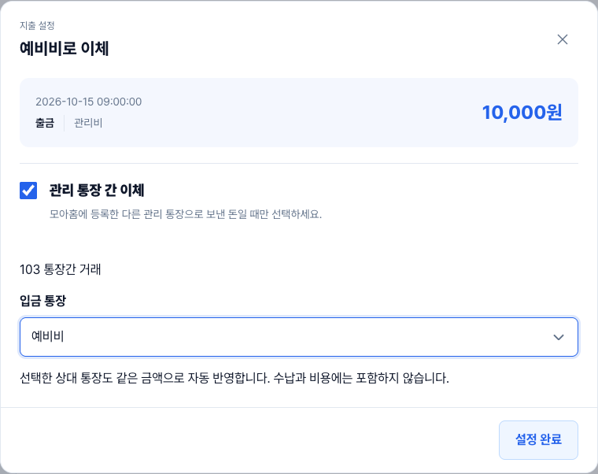
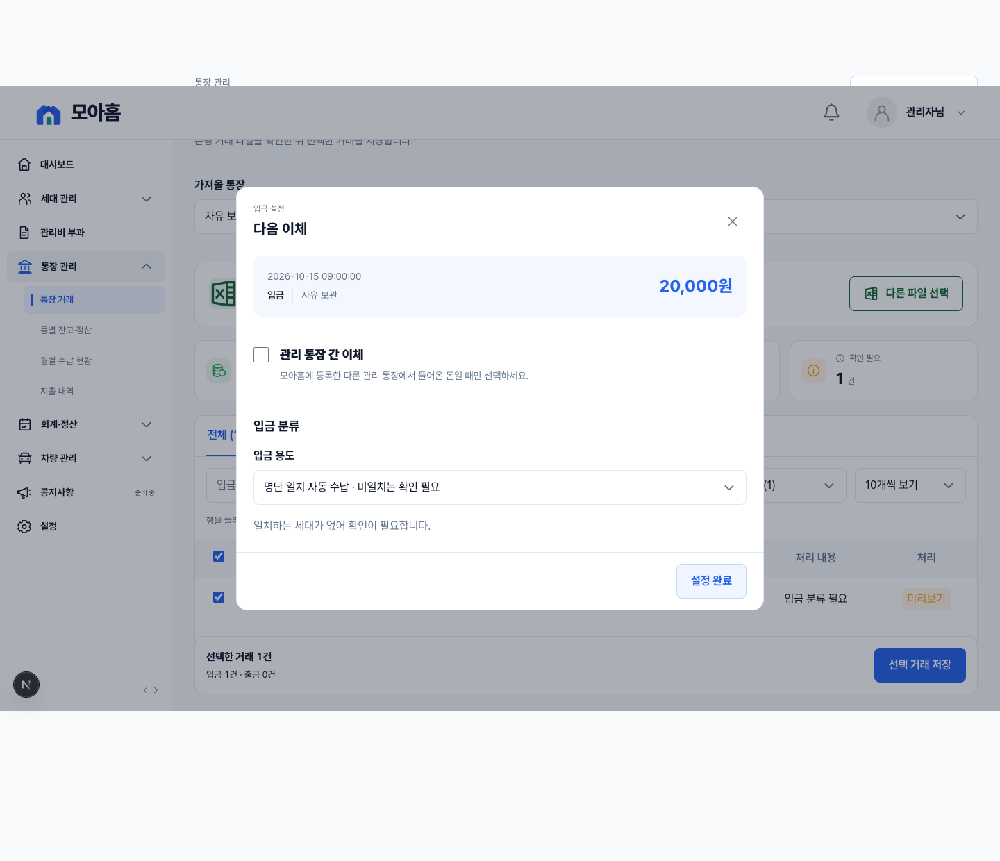
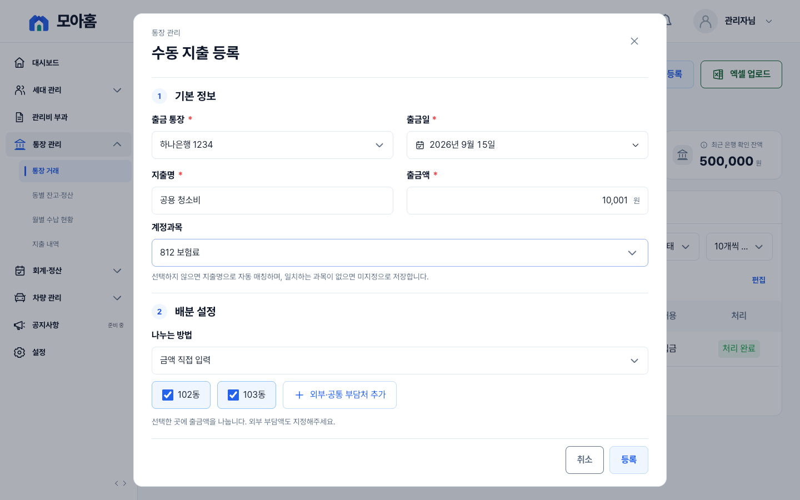
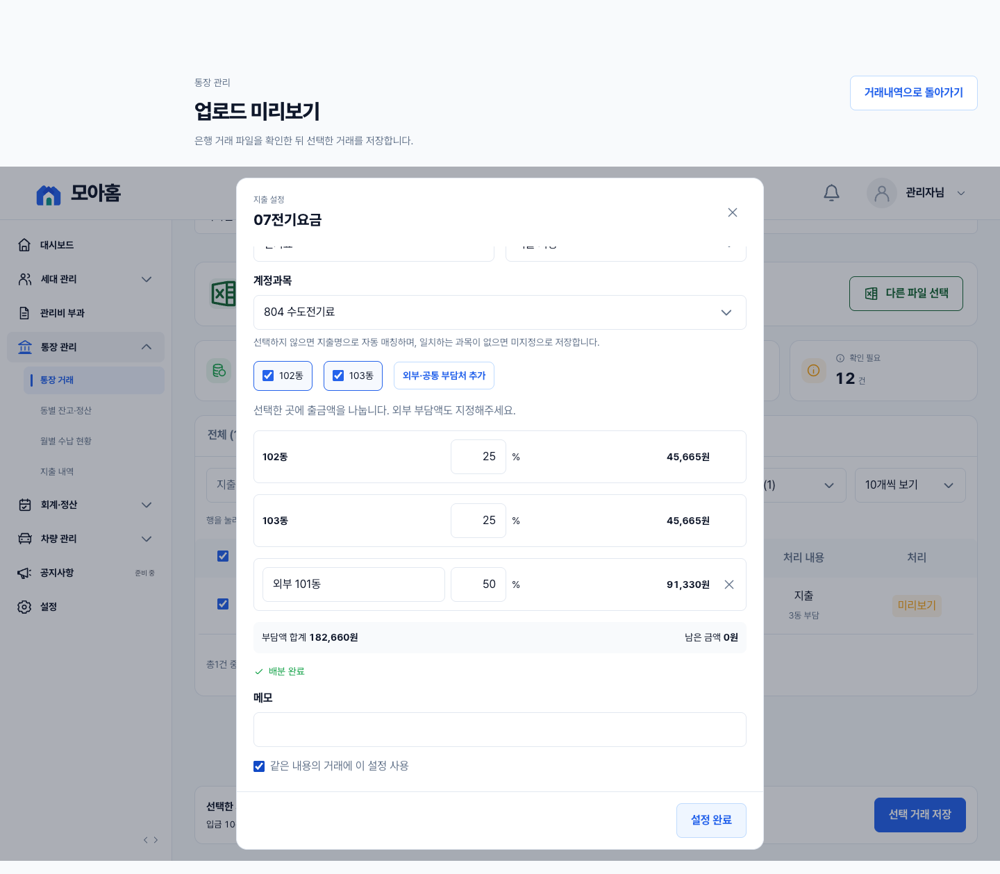
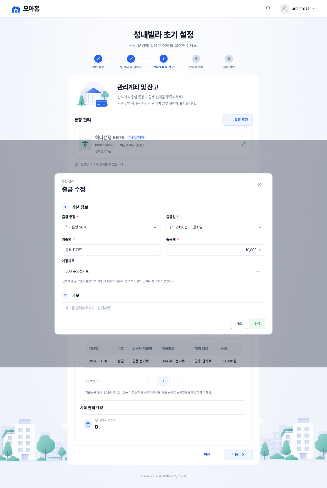
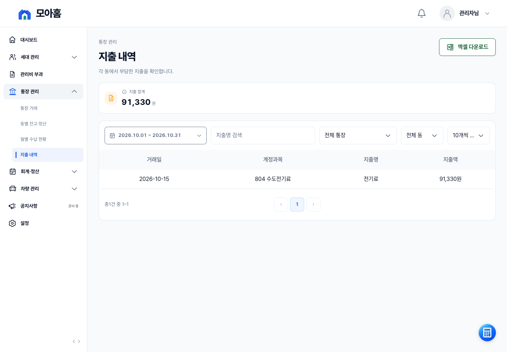
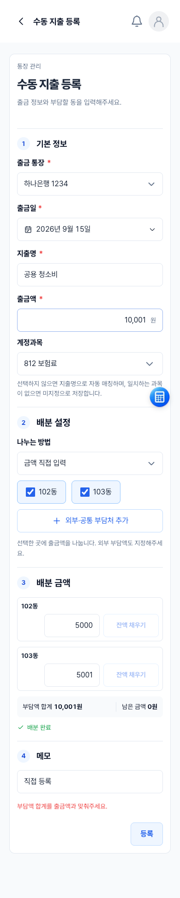

지출 계정과목 선택
수정한 실제 화면을 Chrome에서 캡처했습니다. 화면의 거래 정보는 테스트 데이터입니다.
103 통장간 거래 · 상대 통장 지정

입금 설정 · 여백과 이체 안내 수정

수동 지출 등록

은행 출금 설정

초기 설정의 지출 입력

지출 목록

모바일 지출 등록

수정한 실제 화면을 Chrome에서 캡처했습니다. 화면의 거래 정보는 테스트 데이터입니다.






